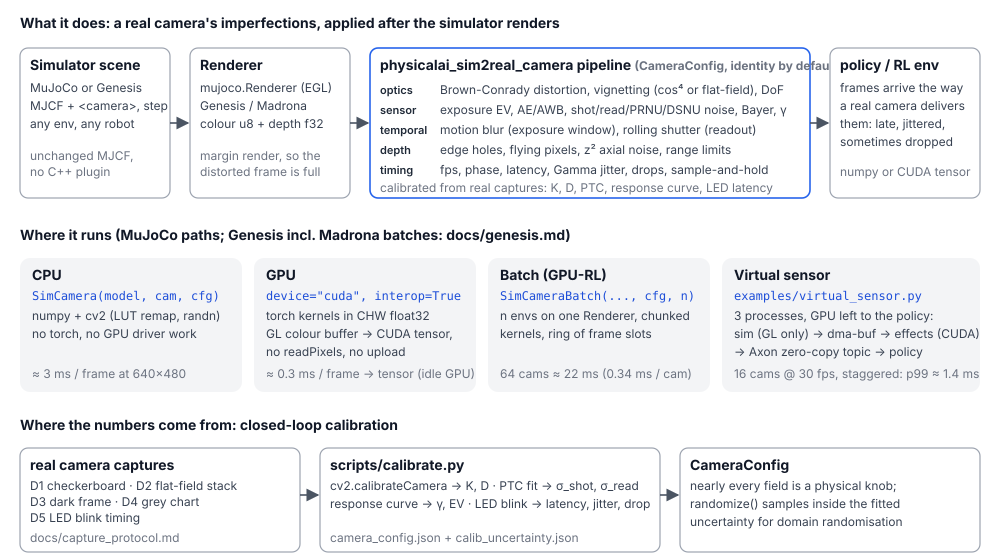
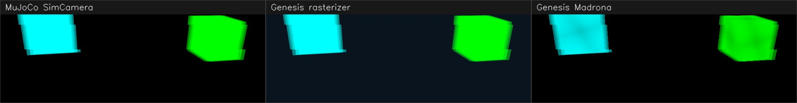
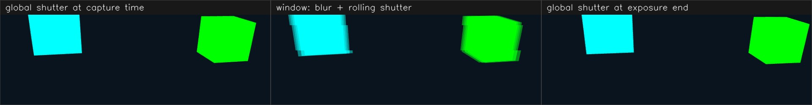
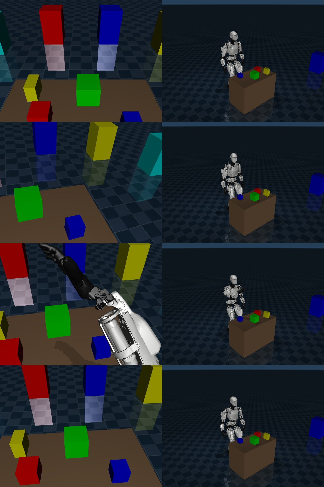

Genesis renders a perfect pinhole image, instantly. A robot's real camera distorts, adds noise, blurs while the head turns, reads its rows with a rolling shutter and delivers frames late, jittered and sometimes not at all. This paper describes how we put a full sim-to-real camera model on top of Genesis without modifying Genesis, how closely it matches the same model in MuJoCo, how it scales to hundreds of environments, and what it does not cover.
Visuomotor policies trained in simulation see an idealised camera. Genesis cameras return the rendered image only: there is no noise, vignetting, motion blur, rolling shutter or exposure model, and the camera sensor rejects delay and jitter options. A policy that never met these effects in training meets all of them at once on the robot.
physicalai-sim2real-camera is a post-process on the simulator's render that makes the simulated camera behave like a real one: lens distortion, vignetting and depth of field; exposure, auto exposure, shot, read and fixed-pattern noise, Bayer and gamma; motion blur over the exposure window and rolling shutter over the readout; frame rate, latency, jitter and drops; and depth artefacts. Nearly every parameter is a physical quantity that can be fitted from captures of the real camera. The pipeline was first built for MuJoCo. The Genesis backend feeds Genesis renders into the same pipeline, so the same configuration produces the same camera in both simulators.

The backend is one class, GenesisCamera. It never renders from the user's physics scene. It reads the robot's joint state from the physics scene, keeps a short history of it, and renders in a second, never-stepped copy of the scene (the mirror scene). The rendered sub-frames go into the same accumulation and image pipeline that MuJoCo uses, and the user receives frames through the same CameraStream.
Two decisions shape the design. First, motion blur and rolling shutter need renders at sub-frame times on a 2 ms grid, while a typical Genesis physics step is 5 ms. The backend therefore records (t, qpos) every step and renders at interpolated states, the same way the MuJoCo backend does. Second, rendering happens in a separate scene because writing the joint state back into Genesis' physics scene changes later physics steps, even when the same values are written (section 3).
import genesis as gs
from physicalai_sim2real_camera import CameraConfig, CameraStream
from physicalai_sim2real_camera.genesis_bridge import GenesisCamera
gs.init(backend=gs.gpu)
scene = gs.Scene(sim_options=gs.options.SimOptions(dt=0.005))
robot = scene.add_entity(gs.morphs.MJCF(file=xml))
cfg = CameraConfig.preset("calibrated", 640, 480)
cam = GenesisCamera(xml, "head_cam", cfg, dt=0.005) # builds its own mirror scene
scene.build()
stream = CameraStream(cam, cfg)
for _ in range(n_steps):
scene.step()
frame, capture_t, k = stream.step(types.SimpleNamespace(time=scene.sim.cur_t, qpos=robot.get_qpos()))Genesis itself is not modified. Everything below lives in the package's Genesis bridge and its examples and checks. Each item exists because of a specific property of Genesis.
| Component | Why it was needed | Where |
|---|---|---|
| Image-pipeline bridge | Genesis cameras return the ideal render only; the camera sensor rejects delay and jitter | GenesisCamera → SimCameraBatch(renderer=False) |
| Render-only mirror scene | RigidSolver.set_qpos changes later physics steps even when it rewrites the current values (a finger joint drifted 0.04 rad after 7 s); restoring warm-start state or skipping forward kinematics did not help | GenesisCamera.mirror |
| Joint-state ring and interpolation | Blur and rolling-shutter sub-frames fall on a 2 ms grid; physics steps are 5 ms | push, interp_qpos |
| Floating-base interpolation | Quaternions of free and ball joints must not be interpolated linearly; matches MuJoCo's integration to 4.4e-16 | quat_starts, slerp |
| Camera mount resolution | Genesis merges joint-less bodies into their parent link and drops MJCF cameras | camera_mount |
| Depth background correction | A 24-bit depth buffer resolves z near the far plane coarsely, so the background could be classified as a surface | zfar_of |
| Batched environments | Many environments, each with its own pose, rendered from one scene | n_envs |
| Camera-following headlight | Genesis lights are fixed, so brightness drifts from MuJoCo's headlight as the head turns (figure 4) | headlight |
| Large-scale path | The rasterizer renders environments one by one and reads them back to the host | Madrona batch renderer, batched accumulation, fused lookup |
| Calibrated mount pose and randomisation | Real robots use a calibrated extrinsic; training randomises it per episode | extrinsics, set_extrinsics |
| Mount vibration | Each sub-render needs its own mount pose so that vibration shows up as blur | margin camera re-attached per sub-render |
| Validation suite and examples | Agreement with MuJoCo has to be measured, not assumed | WIRobotics ALLEX, Unitree G1, Apptronik Apollo checks |
The same MJCF camera, configuration and seed were run in both simulators, and the outputs were compared on two robots. The G1 check drives a floating base kinematically (forward 0.4 m/s, yaw 2.5 rad/s, 1.8 Hz bob, swinging arms) and feeds both simulators the same joint state every 2 ms; 58 window-mode captures are compared under ambient light only, so the comparison measures geometry and timing rather than shading.


| Check (G1 unless noted) | MuJoCo | Genesis rasterizer | Genesis Madrona |
|---|---|---|---|
| Joint-state layout: link positions from the same qpos | reference | 3.1e-7 m max | 3.1e-7 m max |
| Window-mode silhouette IoU vs MuJoCo, median (min) | — | 0.995 (0.990) | 0.995 (0.993) |
| Image-centroid offset vs MuJoCo, median (max) | — | 0.46 px (1.21) | 0.12 px (0.65) |
| Window centroid vs global shutter at capture time, median | 6.95 px | 7.05 px | 6.90 px |
| Frame timing, 42.7 s (ALLEX): frames, gaps, mean age, p99 age | 1252, 27, 68.4 ms, 84 ms | identical | — |
| Depth on object pixels (ALLEX), median (worst frame) | reference | 0.15 mm (2.28 mm) | — |
| Physics trajectory with the window camera on vs off (ALLEX) | — | 0 rad difference | — |
On ALLEX (60 degrees of freedom, 12 polynomial joint equalities, a 42.7 s recorded motion with ±65° waist and neck turns) the Genesis MJCF loader reproduces the MuJoCo joint trajectory to 0.0012 rad on the waist and neck and 0.013 rad on the arms. Calibrating the camera from rendered checkerboards recovers the focal length to within 0.14 % in both simulators, and the residual lens-field error is 0.33-0.52 px. Genesis output sits about (−0.21, −0.12) px from MuJoCo's, a constant shift that a calibrated principal point absorbs.
Genesis and MuJoCo shade differently, and Genesis lights are fixed in the world. With Genesis' default lights the image is 30-46 % darker than MuJoCo's and auto exposure compensates with up to 3.6x gain, which multiplies the noise. A fixed forward light matches one view and fails when the head looks down. The camera-following headlight keeps brightness within 1.1 % of MuJoCo on every segment of the ALLEX motion.
| Segment | Default lights | Fixed forward | Headlight |
|---|---|---|---|
| 2-14 s, head still | −46.0 % | +3.4 % | −0.6 % |
| 14-30 s, turning | −45.4 % | +3.2 % | −0.7 % |
| 30-42 s, looking down | −30.3 % | −27.8 % | +1.1 % |
| 14-42 s, all turning | −38.5 % | −11.0 % | +0.1 % |
Profiling the rasterizer path at 16 environments showed where the time went: 74 % in Genesis rendering and host read-back, 14 % in copies, 5 % in the per-environment ingest loop and 0.6 % in the image post-process. The heavy work already ran in CUDA kernels, so the fix was to remove the measured bottlenecks: the Madrona batch renderer renders every environment in one GPU pass and leaves frames on the GPU; a batched accumulation folds each sub-frame into all cameras at once; and an optional compiled lookup fuses the gather. Each step keeps results bit-identical to the single-camera path.
| Environments | Rasterizer | Madrona | Madrona + compiled |
|---|---|---|---|
| 1 | 24.9 ms | 25.2 ms | — |
| 4 | 11.3 ms | — | — |
| 16 | 7.2 ms | 2.32 ms | 2.10 ms |
| 64 | — | 1.48 ms | 1.22 ms |
| 256 | out of memory | 1.38 ms | 1.12 ms |
The Apollo example mounts a D435-class camera on the robot's head in Genesis and replays a scripted motion: the neck scans, turns fast in three windows and the right arm waves through the view, so blur, rolling shutter and latency all show. The panel video puts the external view, the ideal head-camera render at the current time and the frame the policy actually holds side by side.

If Genesis work resumes, these are the next steps, in order:
Genesis goes in its own environment because it installs MuJoCo 4 and opencv-python; MuJoCo is pinned back to 3.14.
uv venv -p 3.12 .venv-genesis
uv pip install -p .venv-genesis torch --index-url https://download.pytorch.org/whl/cu128
uv pip install -p .venv-genesis genesis-world==1.4.5 mujoco==3.14.0 pytest
uv pip install -p .venv-genesis --no-deps -e .
# tests
MUJOCO_GL=egl .venv-genesis/bin/python -m pytest tests/test_genesis_bridge.py tests/test_genesis_apollo.py
# G1 agreement and scaling
.venv-genesis/bin/python scripts/genesis_g1_check.py render genesis
.venv-genesis/bin/python scripts/genesis_g1_check.py report
.venv-genesis/bin/python scripts/genesis_g1_check.py bench madrona compile 16 64 256
# Apollo video
.venv-genesis/bin/python examples/genesis_apollo.py --sim genesis --cfg calibrated --seconds 34 --video apollo.mp4